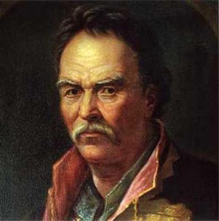

<doctype html>
	<html>
		<head>
			<title>Cкарби гетьмана Павла Полуботка</title>
			<link rel="stylesheet" type="text/css" href="scss/style.css">
			<header><h1 style="text-shadow:0 0 0.2em #F87, 0 0 0.2em #F87">Cкарби гетьмана Павла Полуботка</h1></header>
			<body bgcolor="#F5DEB3">
				<div id="main">
					<aside>
						<div class="menu">
				 <a href="index.html" class="active">Головна</a>
			    <a href="pavlo_polubotok.html">Скарби Полуботка</a>
			    <a href="sagaidachnij.html">Скарби Сагайдачного</a>
			    <a href="yaroslav_mudrii.html">Бібліотека Ярослава Мудрого</a>
			    <a href="danilo_galickogo.html">Клейноди Данила Галицького</a>
			    <a href="bogdan_hmelnickii_skarby.html">Скарби Хмельницького</a>
			    <a href="milionu-falc-fein.html">Мільйони фальц-фейна</a>
			    <a href="ivan_mazepa.html">Скарби Мазепи</a>
			    <a href="developer.html">Про розробника</a>
                     </aside>
                   <article>
				 
				  <p style="text-shadow:0 0 0.2em #F87, 0 0 0.2em #F87">Перше місце займають воістину легендарні скарби в історії України. Те, що ці скарби не міф, а реальність, вже давно доведено. Прийшовши до влади новий гетьман затіяв небезпечну хитру гру з царем за політичні свободи. Дізнавшись про це цар наказав схопити Полуботка та укласти в Трубецькой бастіон. Як би там не було, але гетьман, так нічого і не розповівши, помер від отриманих ран у стінах в’язниці.
                  Але коли влада прийшла конфісковувати його майно – вони не знайшли жодної цінної речі! Документи свідчать, що вгадавши свій результат, Гетьман переправив велику частину своїх багатств в Англію, де не просто їх заховав, а розмістив під відсотки в одному з банків. Все ж ще декілька частин від скарбів залишилися в Україні. Деякі вчені вважають, що ті досі заховані десь в околицях Глухова – колишньої резиденції Полуботка.
                  Про ці скарби багато говорили. Вони часто ставали предметом спору дипломатів. Ще б! Адже при підрахунку самих скарбів та відсотків , що набігли – виходить ні багато, ні мало – а цілих 38 кг на кожного жителя нашої країни (!) На жаль, з політичних мотивів Радянська влада в липні 1986 року заявила, що не має жодних претензій до англійської сторони і не претендує ні на копійку гетьманського скарбу…
                </p>
				  <p>
			      <iframe width="560" height="315" src="https://www.youtube.com/embed/IJuVSO0oDjo" title="YouTube video player" frameborder="0" allow="accelerometer; autoplay; clipboard-write; encrypted-media; gyroscope; picture-in-picture" allowfullscreen></iframe>
			     <p><a href="index.html"></a></p>
			     </article>
			 </div>
			     <footer>
                   <td align="center" width="100%" height="50" bgcolor="Gold" colspan="3">Дану сторінку розробив: Студент
                     групи КІ-312, Джердж Василь Іванович який навчається у  <a href="http://www.tk.te.ua">Технічному коледжі</a> ТНТУ ім. І. Пулюя. <a href="https://www.instagram.com/dzherdzhvasil/"> Автор </a></td>
                  </footer>
			</body>
		</head>
	</html>